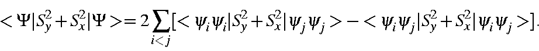
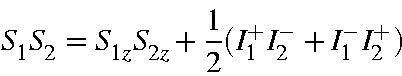
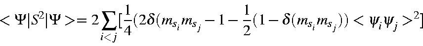
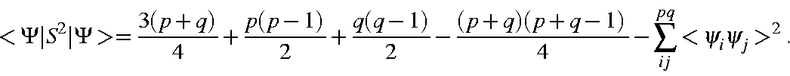
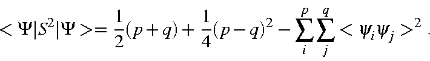
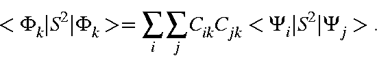
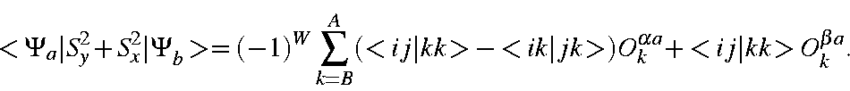
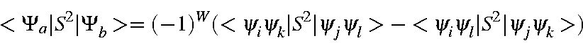
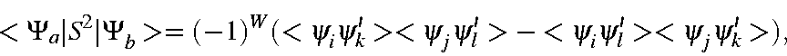
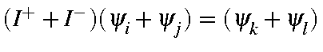

|
S2 = Sx2 + Sy2
+ Sz2 |
| I+ = (Sx
+ iSy) |
I+β =
α |
I+α =
0 |
| I- = (Sx
- iSy) |
I-α = β |
I-β =
0 |
| Sx2+Sy2 |
= |
(I+I-)+i(SxSy-SySx) |
| |
= |
(I-I+)+i(SySx-SxSy) |
| |
= |
½(I+I-
+ I-I+) |
and finally
i(SySx - Sx Sy ) = Sz.
For any microstate Ψ,
the expectation value of the S2 operator is
given by
<S2> = <Ψ|Sz2
+ Sy2 + Sx2|Ψ>
The first part of this expression is obvious, vis:
<Ψ|Sz2|Ψ>
= ¼(Nα
+ Nβ)
However, the effect of
Sy2+
Sx2 is not so simple. By making use of the
fact that the operators involve two electrons, a large number of integrals
resulting from the expansion of the Slater determinants can be readily
eliminated. The only integrals which are not zero due to the orthogonality of
the eigenvectors, i.e., those which may be finite due to the spin operators,
are

Using the relationships already defined, this expression
simplifies [
65] as follows:


or,

Recall that p is the number of α
electrons, and q, the number of β
electrons. This expression simplifies to yield

For the general case, in which the state function Φ,
is a
linear combination of microstates, the expectation value of
S is more complicated:

As with the construction of the C.I. matrix, the elements of this expression
can be divided into a small number of different types:
- 1. Ψa=Ψb:
Since the two wavefunctions are the same, this
corresponds to the expectation value of a microstate, and has already been
derived.
- 2. Except for ψi
in Ψa
and ψj
in Ψb;
Ψa=Ψb:
Assuming ψi
and ψj
to have alpha-spin the expectation
value is

The effect of the spin operator is to change the spin of the electrons but
leave the space part unchanged. All integrals vanish identically due to one or
more of the following identities:
| <ψiψj> |
= |
<mimi> |
= |
Δ(i,j) |
| <ψiψk> |
= |
Δ(i,k) |
|
|
| <ψiψk> |
= |
Δ(j,k) |
|
|
Therefore, <Ψa|S2|Ψb>
= 0.- 3. Except for ψi
and ψj
in Ψa
and ψk
and ψl in
Ψb;
Ψa=Ψb.
Two situations exist: (a) when all four M.O.s
are of the same spin; and (b) when two are of each spin.
When all four M.O.s have the same spin, the effect of the spin operator is to
reverse the spin of two M.O.s in the ket half of the integral. By spin
orthogonality this results in an integral value of zero.
In the case where two M.O.s are of α
spin and two are of β
spin,
the matrix elements, after elimination of those terms which are zero due to
space orthogonality, are

The effect of S2 on ψk
and ψl
is to reverse the spin of these
functions; this gives

where ψ'
has the opposite spin to that of ψ.
Thus, only if ψi
and ψj
are spatially identical with ψk
and ψl will
<Ψa|S2|Ψb>
be non-zero. The phase-factor W is such
that if i=k and j=l then W=-1, and if i=l and j=k then W=1; for all
other cases the matrix element is zero, so the phase of W is irrelevant. For
these two cases, the matrix element is
<Ψa|S2|Ψb>
= 1
if
,
otherwise
<Ψa|S2|Ψb>
= 0.
- 4.
If more than two differences exist,
<Ψa|S2|Ψb>
= 0.